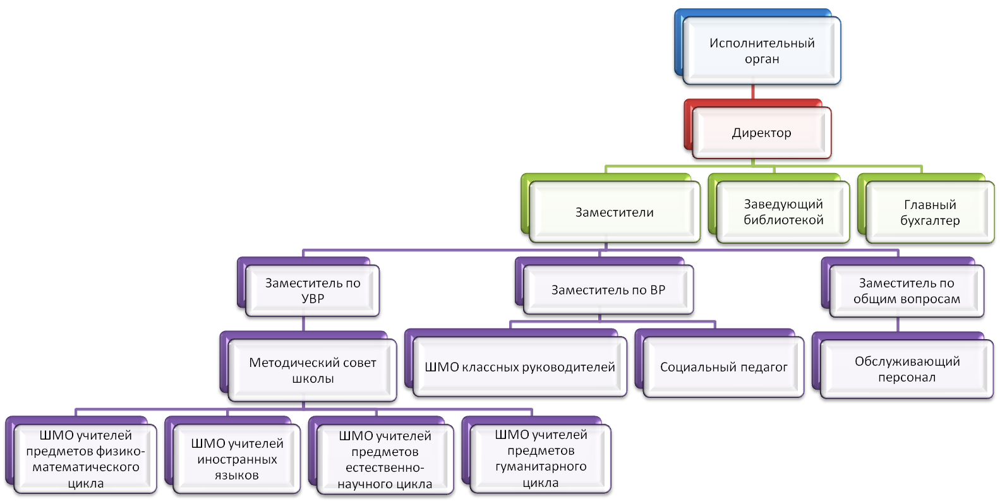

Муниципальное бюджетное общеобразовательное учреждение "Средняя общеобразовательная школа №1 р.п Самойловка Саратовской области"
Краткое наименование образовательного учреждения: МБОУ СОШ №1 р.п Самойловка Саратовской области.
Руководитель: Рыжков Андрей Георгиевич.
Дата создания: октябрь 1911 года
Учредитель: администрация Балашовского муниципального района Саратовской области. Место нахождения: 412309, г. Балашов, ул. Советская, д. 178. Тел.: (84545)4-27-51. Сайт: http://baladmin.ru
Управление образования администрации БМР Место нахождения: г. Балашов, ул. Юбилейная, д. 18. Тел.(факс): (84545)2-25-35. Сайт: http://balobr.ucoz.ru e-mail: bal-nit@yandex.ru
Место нахождения: Почтовый адрес: 412308, Саратовская область, г. Балашов, ул. Макаренко, д. 46. Проезд до остановки "Школа". Автобусы №№8, 9.
Телефон: (84545)5-59-64
Факс: (84545)5-56-35
Адрес электронной почты: sh9bal@yandex.ru
Режим работы: понедельник - суббота, выходной - воскресенье. Школа работает в режиме пятидневной учебной недели в одну смену. Начало занятий в 8.30.
Структура и органы управления образовательной организацией
Управление школой осуществляется на основе сочетания принципов демократичности, открытости, приоритета общечеловеческих ценностей, охраны жизни и здоровья человека, свободного развития личности.

Общее собрание работников.
Общее собрание работников является коллегиальным органом, который включает в себя всех работников Школы.
Создаётся в целях привлечения работников к участию в управлении Школой. Общее собрание работников считается состоявшимся, если на нем присутствовало более половины списочного состава работников Школы.
Решения Общего собрания работников принимаются простым большинством голосов. Председатель: директор Рыжков А. Г.
Педагогический совет.
Педагогический совет – постоянно действующий коллегиальный орган управления, включающий в себя всех педагогических работников Школы.
Рассматривает основополагающие вопросы деятельности Школы, способствующие совершенствованию и развитию образовательного процесса, а также педагогические и методические вопросы.
Председатель: директор Рыжков А. Г.
Общешкольный родительский комитет.
В Школе действуют общешкольный и классные родительские комитеты, задачами которых является содействие Школе, объединение
усилий семьи и Школы в деле обучения и воспитания учащихся. Родительские комитеты избираются сроком на 1 год из числа родителей (законных представителей) учащихся.